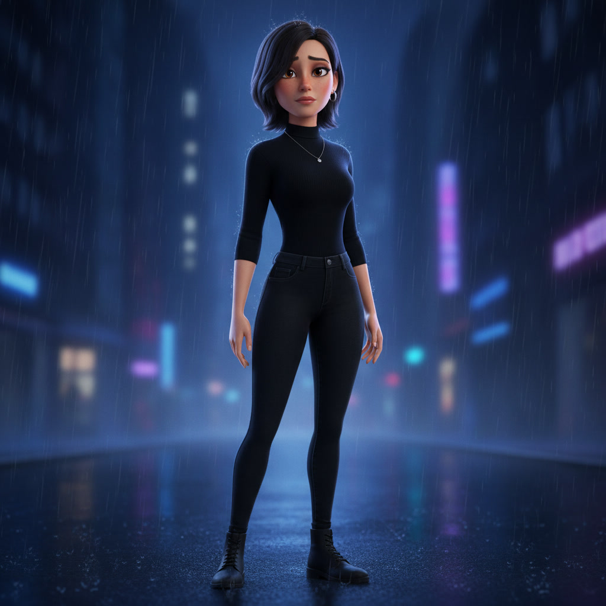

Revision made it worse · Audio issue · Bad pacing — 根因：重复段填洞、双音轨混音、固定 15s 切歌
Case ID: 21670845003 · 2026-05-19 · 38 Langfuse traces
silent_hearts_full_v2.mp4） 是 QA 所指的「修订后更差」的主要成片：去掉 seg15 并加 crossfade，但仍用 seg5/7/10 各播两遍 填补缺失段，且仅有视频轨、每段内嵌 co-generated 音频拼接。V3 在用户要求「无音乐、只要口型表情」后又批量重生 v3_seg1–10，积分耗尽，未交付 full_v3。
v2_lip 从未进成片；V3 全量 silent 重生且未交付。v3_seg* 全量重生audio_tracks，仅段内嵌音频sound=off；master = 用户 MP3 或 TTS| # | Clip | 说明 |
|---|---|---|
| 1–3 | seg1, seg2, seg3 | 正常 |
| 4–5 | seg5, seg5 | 重复（缺 seg4） |
| 6–7 | seg7, seg7 | 重复（缺 seg6, seg8） |
| 8 | seg9 | 正常 |
| 9–10 | seg10, seg10 | 重复（缺 seg11） |
| 11–13 | seg12, seg13, seg14 | 正常；seg15 已删 |
来源：trace-19 execute_edit_video · 输出 195s · 12× crossfade 800ms · 无独立 audio_tracks

analysis/case-21670845003-v3-revision-audio-pacing-问题与方案.mdanalysis/langfuse-data/cases/21670845003/trace-*.json (38 files)analysis/langfuse-data/cases/21670845003/assets.jsonanalysis/langfuse-data/cases/21670845003/qa-report.html